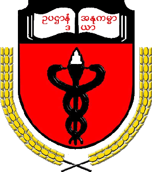
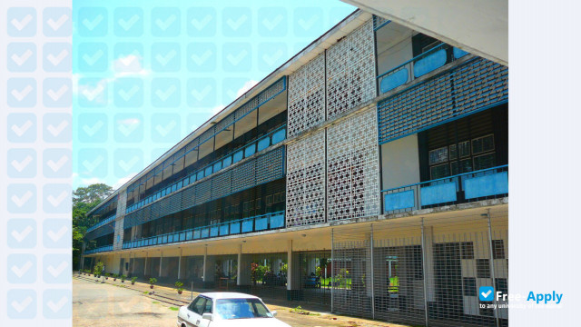
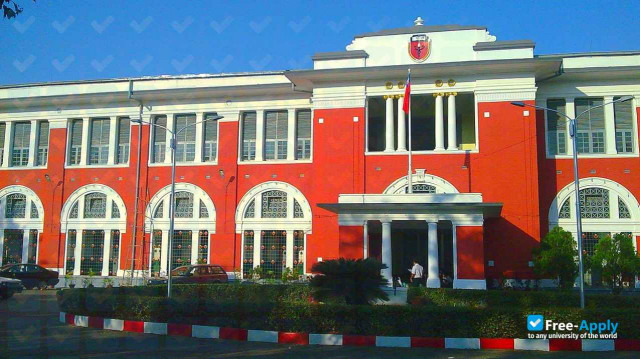

University of Medicine 1
Yangon, Myanmar
Excellence in Medical Education

About the University
University of Medicine 1, Yangon 🏥 is one of Myanmar's leading medical universities. It is committed to producing competent doctors and healthcare professionals through high-quality medical education, clinical training, scientific research, and community healthcare services.
Address
1.Lanmadaw Campus 🏥 (Main Campus)
Address: No. 245, Myoma Kyaung Street, Lanmadaw Township, Yangon, Myanmar.
2.Pyay Road Campus 🏥 (Leikkhon Campus)
Address: No. 12, Pyay Road, Ward No. 9, Kamayut Township, Yangon, Myanmar.
3.Thaton (Thahtone) Road Campus 🏥
Address: Thaton Road, Yangon University Estate, Kamayut Township, Yangon, Myanmar
Courses
- MBBS
- M.Med.Sc
- Master Degree
- Doctorate (Ph.D)
Admission Requirements
- Passed Matriculation Examination
- Excellent Biology
- Excellent Chemistry
- Meet Annual Cut-off Marks
Facilities
- Teaching Hospital
- Modern Laboratories
- Medical Library
- Research Center
- Computer Laboratory
- Student Hostel
Entrance Marks
(English+Chemistry+Bio)
Lowest Male-251
Lowest Female-258
(Changes Every Year)
Campus Gallery



Contact Information
+95-1-395018, -251032, -251037
rector@um1yangon.edu.mm
Visit Official Website